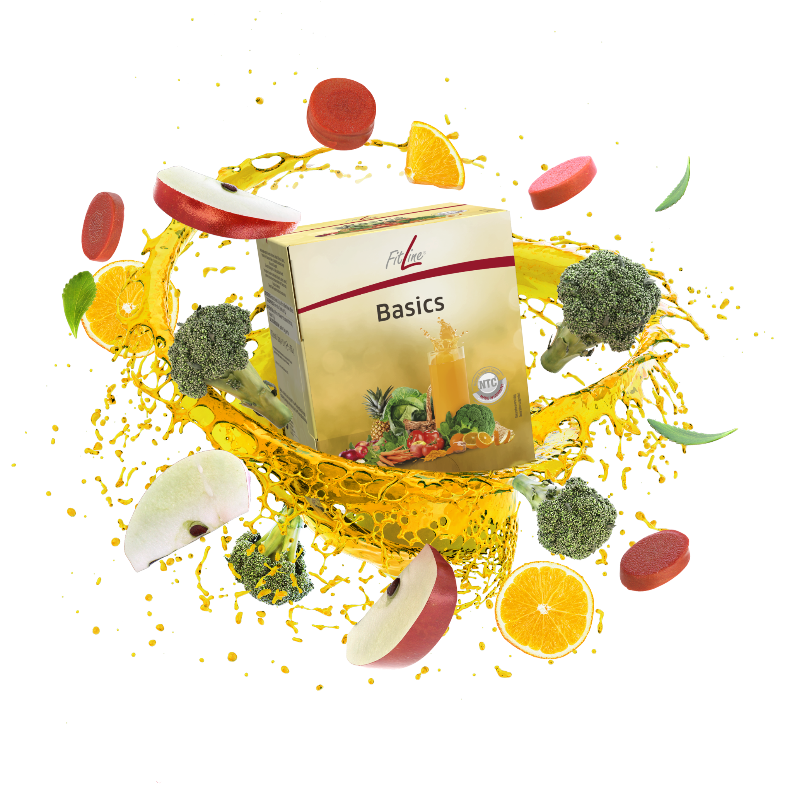
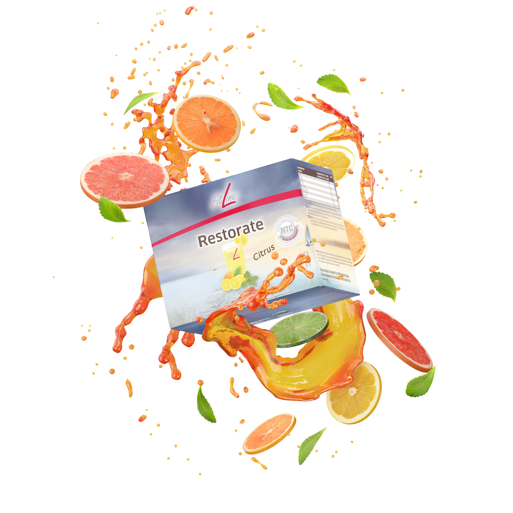

เริ่มต้นอาชีพของคุณ
เราทำงานในด้านกีฬา ฟิตเนส สุขภาพ และไลฟ์สไตล์ โดยมุ่งเน้นการตลาดผลิตภัณฑ์ที่ได้รับสิทธิบัตรหลายรายการ ซึ่งกำลังได้รับความสนใจอย่างมากในวงการนี้
มีนักกีฬาชั้นนำมากกว่า 2,000 คนทั่วโลกที่ไว้วางใจในผลิตภัณฑ์ของเรา รวมถึงแชมป์โลกและแชมป์ระดับประเทศ เช่น สมาคมสกีแห่งเยอรมนี สมาคมกรีฑาเยอรมนี สมาคมจักรยานเยอรมนี สมาคมฮอกกี้น้ำแข็งเยอรมนี และอื่นๆ อีกมากมาย
ไอคอนกีฬาที่มีชื่อเสียง เช่น มาร์คุส แบ็บเบล (ฟุตบอล), ริวัลโด (ฟุตบอล), โนวัค ยอโควิช (เทนนิส) และเลารา ดาห์ลไมเออร์ (ไบแอธลอน) ก็เลือกใช้แนวคิดของเราเช่นกัน
ด้วยข้อมูลอ้างอิงที่แข็งแกร่งเช่นนี้ คุณมีโอกาสสร้างรายได้เสริม หรือแม้กระทั่งทำเป็นธุรกิจหลักที่สามารถดำเนินงานได้จากทุกที่ทั่วโลก
ประสบการณ์ยาวนานกว่า 30 ปี และการได้รับการจัดอันดับให้อยู่ใน 10 อันดับแรกของโลกจากบริษัทมากกว่า 22,000 แห่งในอุตสาหกรรมเดียวกัน เป็นเครื่องพิสูจน์ถึงคุณภาพและความน่าเชื่อถือของบริษัทของเรา
และนี่คือข้อมูลเฉพาะและแรงบันดาลใจบางส่วนเกี่ยวกับบทบาทของหัวหน้าทีม ที่เราได้เตรียมไว้ให้คุณ
เราช่วยให้คุณสร้างรายได้จากที่บ้าน ด้วยอิสระทางเวลาและการสนับสนุนจากพี่เลี้ยงส่วนตัว
ไม่ต้องมีประสบการณ์มาก่อน – คุณจะได้รับการฝึกอบรมที่ดีที่สุดและการดูแลระยะยาว
หากคุณต้องการทราบข้อมูลเพิ่มเติมเกี่ยวกับผลิตภัณฑ์ หรือโอกาสในการทำงานเสริม กรุณากรอกแบบฟอร์มด้านล่างนี้
หากคุณต้องการทราบข้อมูลเพิ่มเติมเกี่ยวกับผลิตภัณฑ์ หรือโอกาสในการทำงานเสริม กรุณากรอกแบบฟอร์มด้านล่างนี้
ข้อมูลเกี่ยวกับงาน
- ฉันเป็นพนักงานประจำหรือไม่? – ไม่ใช่ เป็นงานอิสระในรูปแบบฟรีแลนซ์
- เครื่องมือที่จำเป็น? – โทรศัพท์ แท็บเล็ต หรือแล็ปท็อป + อินเทอร์เน็ต
- เวลาทำงาน? – คุณเลือกเองว่าจะทำเมื่อไหร่และเท่าไหร่
- รายได้? – ขึ้นอยู่กับยอดขายสินค้า (ค่าคอมมิชชัน + รายได้แบบพาสซีฟ)
- ช่องทางทำงาน? – เริ่มจาก Kleinanzeigen และสามารถขยายไปยังช่องทางอื่นๆ
หน้าที่หลัก
- โพสต์ประกาศและติดตามผู้ที่สนใจ
- ส่งข้อมูลผ่าน WhatsApp หรือโทรศัพท์ และบันทึกในระบบ
- ดูแลและฝึกอบรมผู้ที่สนใจรายใหม่
สิ่งที่เราคาดหวังจากคุณ
- ทำตามแนวทางและรับคำแนะนำเพื่อการเติบโตที่เร็วขึ้น
- เป็นผู้ใช้ผลิตภัณฑ์ที่กระตือรือร้นเพื่อประสบการณ์จริง
- เปิดรับการเรียนรู้และพร้อมพัฒนาไปด้วยกัน
แบบฟอร์มติดต่อกลับ
ผลิตภัณฑ์ FitLine แนะนำ
🟥 AOP – น้ำพุแห่งความเยาว์วัย

- กระตุ้น มีชีวิตชีวา สดชื่น
- ช่วยลดอาการปวดศีรษะและไมเกรน
- พลังงานมากขึ้น ประสิทธิภาพดีขึ้น ออกซิเจนเพิ่มขึ้น
- เพิ่มออกซิเจนในร่างกาย 10%
- เพิ่มประสิทธิภาพร่างกาย 32%
- ช่วยเผาผลาญไขมันมากขึ้น
- มีวิตามินบีครบถ้วน (วิตามินระบบประสาท)
- มีผงสาหร่ายทะเล
🟨 Basics – โภชนาการครบถ้วนจากธรรมชาติ
- วิตามินบีครบถ้วน (วิตามินระบบประสาท)
- มีผงสาหร่ายทะเล
- ช่วยล้างลำไส้ เหมาะกับผู้มีอาการแพ้
- ช่วยให้อิ่ม ลดความอยากอาหาร
- ผิวพรรณดีขึ้น
- มีเอนไซม์ 32 ชนิด = ผักผลไม้ 1.5 กก.
- สารอาหารและพลังงานครบถ้วน
- เสริมระบบภูมิคุ้มกัน
- สารต้านอนุมูลอิสระมากมาย
- มีสมุนไพรอายุรเวท ช่วยดูดซึมดีขึ้น
- ดูดซึมดีขึ้นด้วยเทคโนโลยี NTC
- เหมาะสำหรับผู้เป็นเบาหวาน
- มี OPC ขมิ้นชัน และเอนไซม์จากธรรมชาติ
- มีจุลินทรีย์และแบคทีเรียกรดแลกติก
🟩 Restorate – เครื่องดื่มฟื้นฟูยามเย็น
- ช่วยฟื้นฟูร่างกาย
- ช่วยลดน้ำหนัก ควบคุมน้ำหนัก
- เป็นผงด่าง ช่วยลดกรด
- ช่วยขับสารพิษออกจากร่างกาย
- บรรเทาอาการข้อเสื่อม กระดูกพรุน ริดสีดวง ต่อมลูกหมาก
- เสริมภูมิคุ้มกัน
- ฟื้นตัวไวขึ้นหลังออกกำลังกาย
- ช่วยคลายเครียด เสริมระบบประสาท
- บรรเทาอาการกรดไหลย้อน
- เสริมสุขภาพผิว ผม เล็บ
- ช่วยให้นอนหลับดีขึ้น
- ลดอาการเมาค้าง และตะคริว
- แร่ธาตุอินทรีย์: วิตามิน D, ทองแดง, สังกะสี, แคลเซียม, แมกนีเซียม